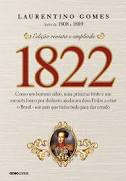
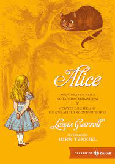

Sumário:
1822
Sinopse
Sucesso de Laurentino Gomes sobre a independência do Brasil está de volta em edição revista e ampliada lançada pela Globo Livros.
O segundo volume da premiada trilogia de Laurentino Gomes sobre episódios fundamentais da história do Brasil está de volta às livrarias em uma edição revista e ampliada. Em 1822, o escritor compara diferentes relatos sobre o dia 7 de setembro que redefiniu os rumos do nosso país. Mais do que desmistificar o grito da independência às margens do Ipiranga, o escritor analisa como D. Pedro conseguiu, apesar de todas as dificuldades, fazer do Brasil uma nação de proporções monumentais.
Laurentino observa como as mudanças provocadas pela fuga da família real portuguesa em 1808 deram início a um processo de maior autonomia que pressionou o príncipe regente a declarar a independência do Brasil. O autor mostra como as Guerras Napoleônicas, a Revolução Francesa e a independência dos Estados Unidos influenciaram as ideias de brasileiros que defendiam o fim da submissão à metrópole, formando um ambiente favorável à criação de um novo país.
No entanto, declarar a independência foi apenas o começo. Com os cofres brasileiros esvaziados por D. João VI em seu retorno a Portugal, D. Pedro se viu diante do desafio de reduzir os gastos do governo, construir a ideia do que é “ser brasileiro” e reprimir as revoltas internas. Para alguns brasileiros, era necessário romper radicalmente com os portugueses e proclamar a república, enquanto outros não viam motivo para ser parte do país que estava surgindo.
Além das proporções continentais representarem uma dificuldade ao projeto de preservar a unidade do território colonial, em 1822 o Brasil já apresentava um cenário de extrema desigualdade. Enquanto cidades como Rio de Janeiro e Salvador contavam com uma população urbana, universidades e instituições governamentais, em outras regiões era praticada apenas a agricultura de subsistência. Foi necessário um esforço de vários personagens para estabelecer uma nova nação.
Laurentino une a pesquisa a um texto leve e saboroso que trata história como um assunto cativante, que nos leva a compreender melhor as origens do Brasil e como problemas estruturais ainda influenciam a nossa realidade. Vencedor do Prêmio Jabuti de Melhor Reportagem e aclamando como Livro do Ano de Não Ficção, 1822 é uma leitura essencial para todos que desejam compreender melhor o nosso país.
Fonte: Google Books
| Data da primeira publicação | Autor | Idioma original de publicação | Gêneros |
|---|---|---|---|
| 07/09/2010 | Laurentino Gomes | Português | História do Brasil, Política |
Harry Potter e a Pedra Filosofal

Sinopse
Harry Potter nunca tinha ouvido falar em Hogwarts até o momento em que as CARTAS começam a aparecer no capacho do número 4 da rua dos Alfeneiros. Endereçadas com um PÚRPURA, elas são repidamente confiscadas por seus tios TERRÍVEIS. E então, no décimo primeiro aniversário de Harry, um homem GIGANTESCO com olhos luzindo como besouros negros chamado RÚBEO HAGRID entra intempestivamente com uma notícia ASSOMBROSA: Harry Potter é um bruxo e tem uma vaga na ESCOLA DE MAGIA E BRUXARIA DE HOGWARTS. Uma aventura inacreditável está para começar!
Fonte: Google Books
| Data da primeira publicação | Autor | Idioma original de publicação | Gêneros |
|---|---|---|---|
| 26/06/1997 | J. K. Rowling | Inglês | Romance, Literatura infantil, Literatura fantástica, Alta fantasia |
O Senhor dos Anéis: A Sociedade do Anel
Sinopse
A Sociedade do Anel O volume inicial de O Senhor dos Anéis, lançado originalmente em julho de 1954, foi o primeiro grande épico de fantasia moderno, conquistando milhões de leitores e se tornando o padrão de referência para todas as outras obras do gênero até hoje. A imaginação prodigiosa de J.R.R. Tolkien e seu conhecimento profundo das antigas mitologias da Europa permitiram que ele criasse um universo tão complexo e convincente quanto o mundo real. A Sociedade do Anel começa no Condado, a região rural do oeste da Terra-média onde vivem os diminutos e pacatos hobbits. Bilbo Bolseiro, um dos raros aventureiros desse povo, cujas peripécias foram contadas em O Hobbit, resolve ir embora do Condado e deixa sua considerável herança nas mãos de seu jovem parente Frodo. O mais importante legado de Bilbo é o anel mágico que costumava usar para se tornar invisível. No entanto, o mago Gandalf, companheiro de aventuras do velho hobbit, revela a Frodo que o objeto é o Um Anel, a raiz do poder demoníaco de Sauron, o Senhor Sombrio, que deseja escravizar todos os povos da Terra-média. A única maneira de eliminar a ameaça de Sauron é destruir o Um Anel nas entranhas da própria montanha de fogo onde foi forjado. A revelação faz com que Frodo e seus companheiros hobbits Sam, Merry e Pippin deixem a segurança do Condado e iniciem uma perigosa jornada rumo ao leste. Ao lado de representantes dos outros Povos Livres que resistem ao Senhor Sombrio, eles formam a Sociedade do Anel. Alguém uma vez disse que o mundo dos leitores de língua inglesa se divide entre os que já leram O Senhor dos Anéis e os que um dia lerão o livro. Com esta nova tradução da obra, o fascínio dessa aventura atemporal ficará ainda mais evidente para os leitores brasileiros, tanto os que já conhecem a saga como os que estão prestes a descobrir seu encanto.
Fonte: Google Books
| Data da primeira publicação | Autor | Idioma original de publicação | Gêneros |
|---|---|---|---|
| 28/06/1984 | J.R.R. Tolkien | Inglês | Literatura fantástica |
Percy Jackson e o Ladrão de Raios

Sinopse
Primeiro volume da saga Percy Jackson e os olimpianos, O ladrão de raios esteve entre os primeiros lugares na lista das séries mais vendidas do The New York Times. O autor conjuga lendas da mitologia grega com aventuras no século XXI. Nelas, os deuses do Olimpo continuam vivos, ainda se apaixonam por mortais e geram filhos metade deuses, metade humanos, como os heróis da Grécia antiga. Marcados pelo destino, eles dificilmente passam da adolescência. Poucos conseguem descobrir sua identidade. O garoto-problema Percy Jackson é um deles. Tem experiências estranhas em que deuses e monstros mitológicos parecem saltar das páginas dos livros direto para a sua vida. Pior que isso: algumas dessas criaturas estão bastante irritadas. Um artefato precioso foi roubado do Monte Olimpo e Percy é o principal suspeito. Para restaurar a paz, ele e seus amigos – jovens heróis modernos – terão de fazer mais do que capturar o verdadeiro ladrão: precisam elucidar uma traição mais ameaçadora que fúria dos deuses.
Fonte: Google Books
| Data da primeira publicação | Autor | Idioma original de publicação | Gêneros |
|---|---|---|---|
| 28/06/2005 | Rick Riordan | Inglês | Mitologia grega, Romance, Ficção juvenil, Literatura fantástica, Alta fantasia |
Alice no País das Maravilhas
Sinopse
'Você poderia me dizer, por favor, qual caminho eu devo seguir a partir daqui?'
Que esta pergunta seja feita por uma garotinha perdida de casa (após ter seguido um coelho falante até sua toca) a uma espécie de gato fantasmagórico flutuante já não causa nenhuma estranheza quando chegamos na tal parte da história, pois como nos alertou a própria menina: 'há tanta coisa estranha acontecendo aqui que eu já não me surpreendo com mais nada'.
Com este conto surreal e fantástico, muitas vezes sem sentido algum, noutras vezes carregado de sentido oculto e profundo, Lewis Carroll revolucionou para sempre a literatura infantil, praticamente a refundando (não surpreende que encontremos algo do seu estilo em Antoine de Saint-Exupéry e Monteiro Lobato). É aqui que conheceremos célebres personagens como o Coelho Branco, o Chapeleiro Louco e o Gato de Cheshire. É aqui que veremos, quem sabe, a primeira descrição genuína dos sonhos infantis. É aqui que celebraremos toda a magia da boa literatura - esta que não morre nunca.
Incontáveis peças de teatro, filmes e livros secundários foram criados por conta desta obra preciosa, mas nada substituí ler o original; ainda mais quando se trata da tradução de um de nossos maiores escritores, Monteiro Lobato, numa edição recheada com as clássicas ilustrações de John Tenniel e Arthur Rackham. Bem-vindo ao País das Maravilhas!
Fonte: Google Books
| Data da primeira publicação | Autor | Idioma original de publicação | Gêneros |
|---|---|---|---|
| 11/1985 | Lewis Carroll | Inglês | Literatura infantil, Literatura fantástica, Drama, Ficção juvenil, Ficção Absurdista, Fantástico |

.png)